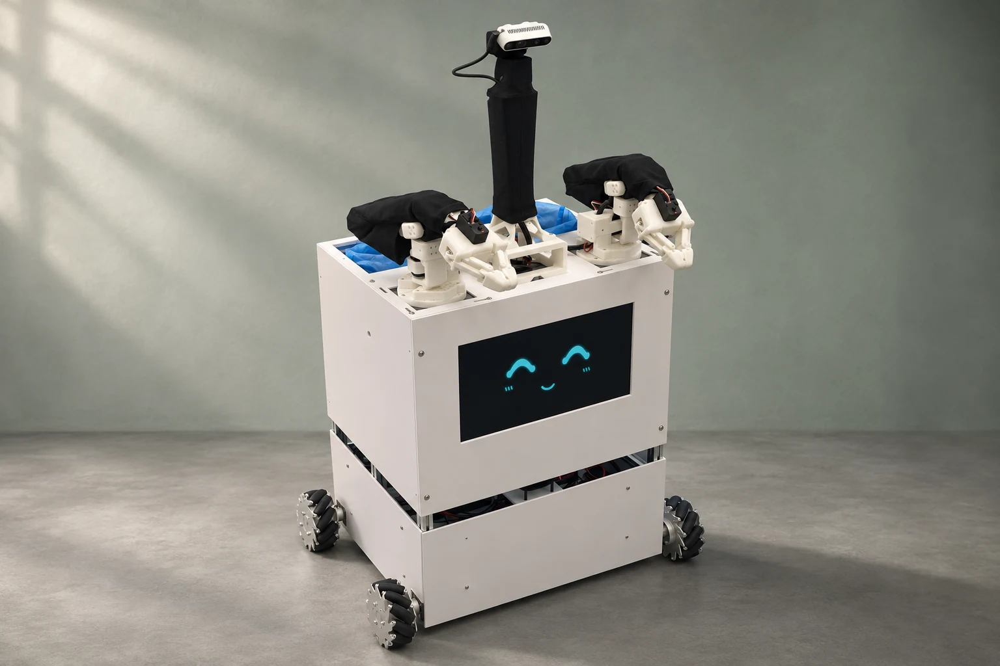
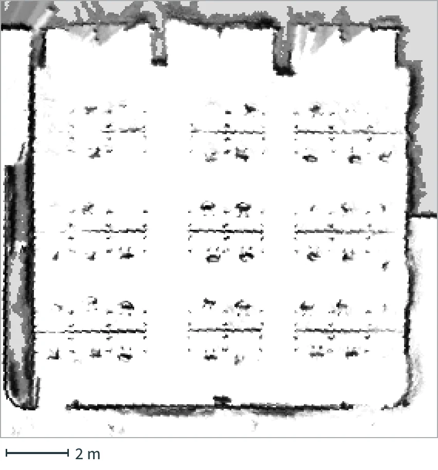
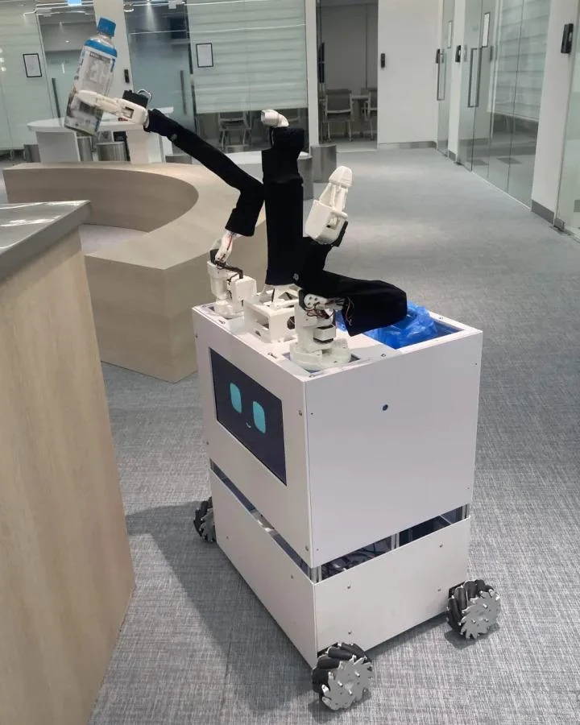
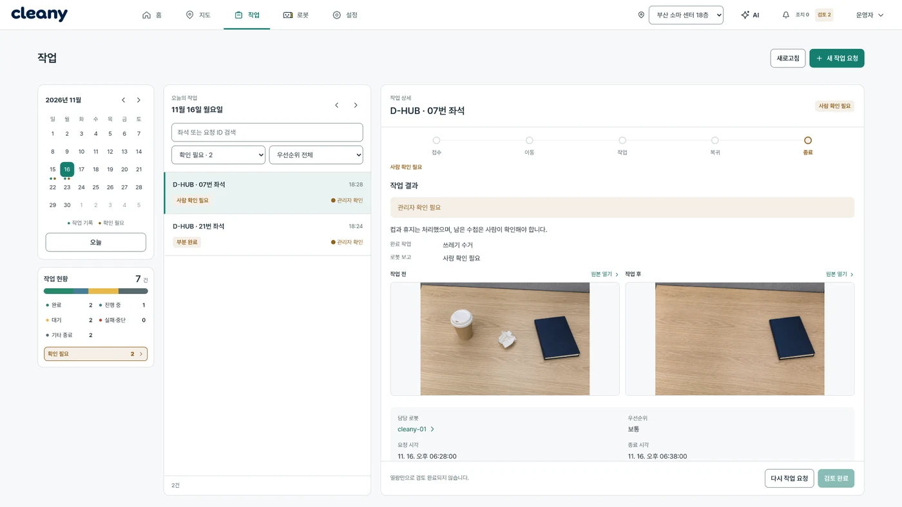
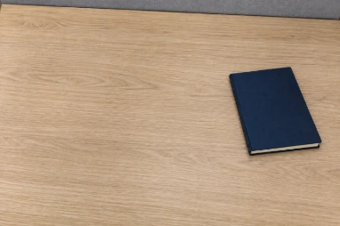
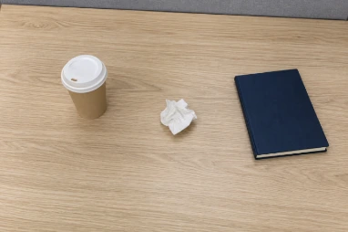
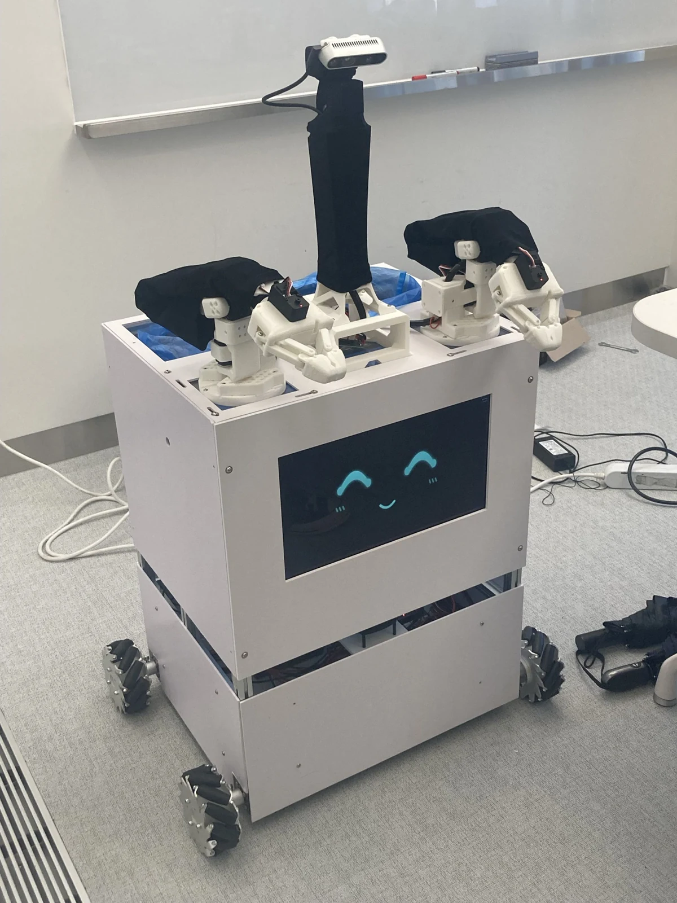

무인 공간 관리 로봇
Ready for
what’s next.
다음 이용을 준비하는 로봇, 끌리니.
이용이 끝난 자리를 살피고 남겨진 물건을 수거해,
무인 스터디카페의 반복적인 점검을 돕습니다.

작동 방식
한 번의 이용이 끝나면.
운영자가 점검할 구역을 지정하면 끌리니가 이동합니다. 남겨진 물건을 확인하고, 작업 전후의 상태를 운영 화면에 남기는 것이 첫 시연의 목표입니다.

요청받은 위치로 이동해 남겨진 물건을 확인합니다.

쓰레기와 분실물 후보를 구분해 다른 곳에 담는 흐름을 구현합니다.

대시보드에서 작업 전후의 공간 상태를 확인합니다.


끌리니 하드웨어
보고, 집고, 움직입니다.

XLeRobot을 기반으로, 실내를 이동하는 베이스 위에 깊이 카메라와 두 개의 로봇팔을 얹었습니다.
RGB-D 카메라
색상과 깊이 정보를 함께 얻어, 작업 영역 안의 물체와 로봇 사이의 거리를 추정합니다.
듀얼 로봇팔
그리퍼가 달린 두 개의 팔로 대상 물체에 접근합니다. 페트병처럼 사전에 정한 물체의 파지와 수거를 시험하고 있습니다.
4륜 메카넘 베이스
메카넘 바퀴 네 개를 구동해 앞으로 가거나 옆으로 이동하고, 제자리에서 방향을 바꿀 수 있도록 설계했습니다.
수거 경로 시뮬레이션
책상에서
수거함까지.
책상 위 물체에 접근하고, 뒤쪽 수거함으로 옮긴 뒤 대기 자세로 돌아오는 로봇팔의 경로를 확인해 보세요.
개발 문서
끌리니를 만드는 기술.
ROS 2 런타임, 시뮬레이션, 펌웨어와 검증 기록을 Cleany 저장소에서 확인할 수 있습니다.
자주 묻는 질문
어떤 공간을 위해 만들고 있나요?
첫 적용 대상으로 무인 스터디카페를 상정했습니다. 이용자가 떠난 뒤 점검과 수거가 필요한 상황에 집중하고, 초기 시연은 개발 공간에서 진행합니다.
수거한 물건은 어떻게 처리하나요?
초기 시나리오에서는 쓰레기는 수거함으로, 분실물 후보는 별도 보관함으로 옮깁니다. 판단이 어려운 물건은 운영자가 확인할 수 있도록 남기는 흐름을 계획하고 있습니다.
지금 도입할 수 있나요?
현재는 개발 중인 프로토타입입니다. 구현 현황과 시험 범위는 위의 개발 문서와 검증 기록에서 확인할 수 있습니다.